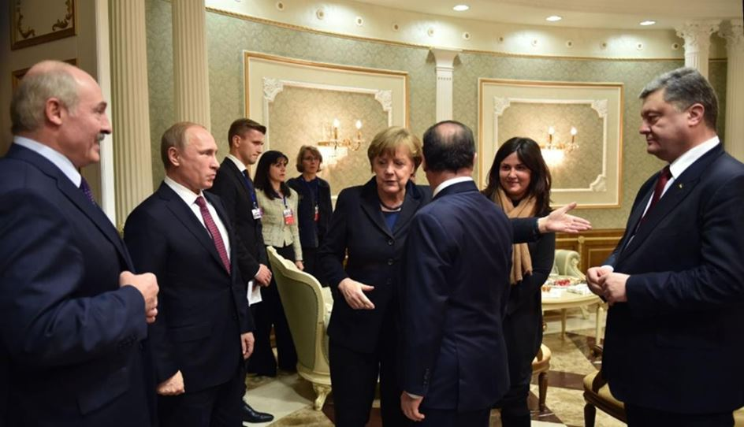

On y avait cru aux douces heures de Minsk-1. On y avait cru aux âpres heures de Minsk-2. On n’y croit plus et l’on n’y croira plus jamais. D’ailleurs, Zakhartchenko, n’a-t-il pas certifié lui-même lors d’une conférence de presse qu’il n’était plus question de proroger avec ou sans nouvelles conditions des accords bafoués par les FAU avec la bénédiction tacite des puissances atlantistes bien servies par les silences sélectifs de l’OSCE. Pas de Minsk-3, 25 ou 100 à l’horizon. La solution se trouve ailleurs.
Sur le terrain, le déploiement de 90.000 militaires sur toute la ligne de front, le grondement des MLRS qui va crescendo et la recrudescence des hostilités autour de Gorlovka et Slavianoserbsk n’annoncent que ce qui a déjà été confirmé par le ministère des Affaires étrangères russe: les FAU se préparent à percer sur trois axes: Donetsk-nord coupant de facto Donetsk de Gorlovka, Donetsk-sud depuis les environs de Volnovakha et du côté de Novoazovsk depuis Marioupol bloquant ainsi toute avancée éventuelle des forces républicaines vers la mer d’Azov. S’agirait-il d’un percée supposée décisive vu l’état exsangue du budget militaire ukrainien et les réticences du FMI, de la BCE et de l’UE à continuer leur soutien matériel à Kiev? De toute façon, l’état piteux de la grivna, la chute vertigineuse et continue du PIB ukrainien, les sanctions gazières russes ainsi que le coût exorbitant d’une seule journée de guerre sont autant de facteurs qui en d’autres circonstances auraient dû mettre un terme à la guerre depuis belle lurette. Mais il n’en est rien et il n’en sera rien. Cet argent manifestement venu de nulle part et qui tue n’a d’autre prix que celui du papier et de l’encre vert grisâtre qui servent à le produire. Ce qui nourrit le brasier ukraino-donbassien n’est que la continuation de ce qui avait nourri le Maïdan sans que l’on n’ait pu croire à ses débuts qu’une révolution orange achevée dégénère in fine en guerre par procuration camouflée en guerre civile. Cette guerre par procuration qui oppose l’OTAN à la Russie, l’impérialisme universaliste au national-souverainisme, a pris les traits d’une guerre d’usure. Une guerre d’usure ne pouvant durer indéfiniment et les solutions diplomatiques proposées par le quartet de Normandie ne valant plus rien, un dénouement militaire prompt et particulièrement violent serait à prévoir. Simplement, ni les Américains ni les puissances européennes occidentales n’en voudront. L’idéal pour eux serait de faire durer la partie aussi longtemps que possible. La motivation étasunienne est la plus complexe. Elle découle de trois prémisses.
Primo, s’il est vrai que le complexe militaro-industriel US n’est pas prêt à s’endormir sur ses lauriers – premier budget mondial de la Défense avec, de trois fois inférieur, le budget chinois, et de cinq fois inférieur, le budget russe – la modernisation de l’arsenal nucléaire américain semblait avoir été repoussée aux calendes grecques sous Obama. Les négociations sur le nucléaire iranien et le retrait des troupes américaines d’Afghanistan ont fragilisé les positions des néoconservateurs. Les vetos russe et chinois en Syrie ont aussi joué leur rôle qui à son tour a été renforcé par la décrédibilisation tout à fait spectaculaire des politiques Bush-Obama au Moyen-Orient suite aux prises de distance de Daesh quant à son démiurge washingtonien. Aussi terribles fussent-ils pour les populations qui payent la note, les dérapages du néoconservatisme ont contribué au développement du modèle multipolaire car de plus en plus d’Etats européens conscients du danger regardent du côté de l’Est. Il fallait par conséquent rétablir l’image de l’Ennemi suprême en jouant sur le crédulité béate des peuples européens. La Russie réendossa ce statut relégué aux oubliettes depuis l’ère Gorbatchev son pseudo-expansionnisme devant horrifier en premier lieu les pays Baltes et la Pologne à l’exemple de l’annexion criméenne et des troupes russes sillonnant les steppes du Donbass. L’accusation en miroir a toujours été le point fort des services de propagande atlantistes. Le conflit qui sévit actuellement en DNR-LNR a redoré le blason de l’Alliance atlantique en plongeant les pays traditionnellement russophobes et les Etats occidentaux satellisés dans un état d’hystérie préventive qu’il convient d’entretenir. Cette guerre d’usure minant le Donbass et l’ensemble de l’Ukraine n’est que le reflet d’une immense guerre d’usure économique et psychologique que les USA sont en train de mener contre l’UE.
Secundo, les insuccès accumulés de la CIA et le conflit qui a opposé son chef, John Brennan, au chef de la Commission de contrôle des activités de la CIA, Dianne Feinstein, a sensiblement secoué le renseignement qui a lui aussi joué sur la menace russe en Europe. Du coup d’Etat « démocratique » réussi de Kiev aux petits bonhommes verts guerroyant contre les FAU de Marioupol à l’oblast’ de Lougansk, il a tout fait pour justifier son existence dans le format repoussant qu’on lui connaît et qui n’est pas sans repousser les Américains eux-mêmes après qu’ils aient appris que Guantanamo et ses méthodes ne relevaient pas du cas isolé.
Après une telle campagne de réhabilitation, pas question de se désintéresser du dossier ukrainien lui qui offre plusieurs leviers de pression à la fois.
Tertio, n’oublions pas que pour assurer sa pérennité tout Empire tend à l’expansion. Quand il ne s’étend pas par la guerre – expansion directe – il élargit ses zones d’influence, un peu à l’image d’une pieuvre qui étend ses tentacules. La stratégie du chaos est certes une notion rabattue mais c’est la seule qui explique encore et toujours l’émergence de nouvelles zones grises autour de la puissance à neutraliser. En l’occurrence, la Russie. Le cas transnistrien est celui d’un conflit gelé que l’on croyait sur le point d’être réchauffé il y a près de trois mois, avec la nomination de Saakachvili gouverneur d’Odessa, que l’on oublia durant juillet et qui resurgit la semaine dernière avec les menaces de M. Jagland à l’encontre d’une Moldavie indocile. Si l’on arrive à geler le conflit donbassien en le dégelant à l’occasion, non seulement l’Ukraine n’arrivera jamais à redresser son économie – à quoi bon puisque c’est maintenant une colonie US – mais la Russie continuera à faire des cauchemars.
S’en suit que l’aide du FMI sera assurée au compte-gouttes. Il ne s’agit pas d’en finir de sitôt avec le Donbass. La motivation de l’UE est bien différente: Bruxelles voudra bien sûr une énième version de Minsk espérant, d’une façon dirais-je miraculeuse, ne pas être impliqué. Oui, il a bel et bien soutenu le Maïdan et la quasi-totalité de ses conséquences, mais cela partait de bonnes intentions! Tout comme aujourd’hui, il espèrerait que la diplomatie l’emporte sur la barbarie pour mettre ultérieurement en relief son rôle de médiateur irremplaçable. Or, une solution radicale ne puit être qu’une solution essentiellement militaire présupposant une contre-offensive massive de la part des DNR-LNR, c’est-à-dire une exacerbation sans précédent du conflit. Déjà qu’il ne sait comment payer le lourd tribut migrationniste qui lui incombe, l’UE aura à assumer les retombées de son suivisme pro-américain en Ukraine. Si les Républiques l’emportent, Washington perdra un levier de pression extraordinaire. L’heure est grave.
Avant tout pour la Novorossia ce qui s’illustre par cette conclusion sans concession de Zakhartchenko : « Nous n’avons pas d’autre choix que de remporter cette guerre. Vaincre, c’est notre devoir ».
Partager cette page